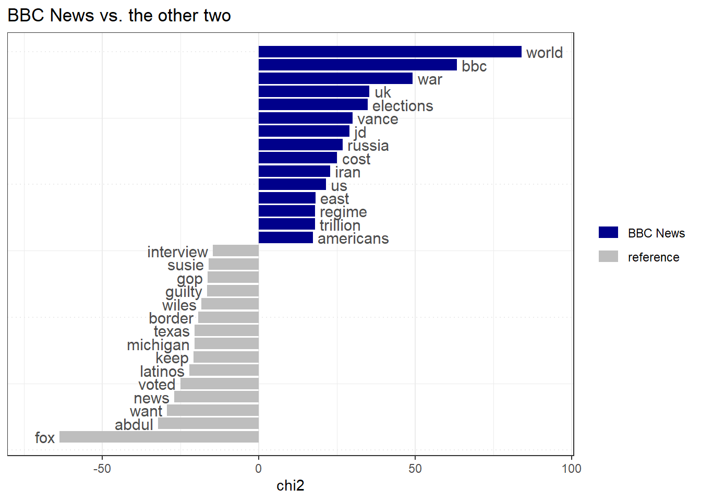
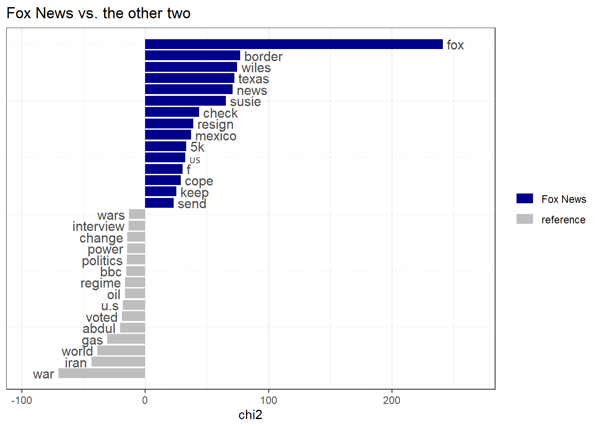
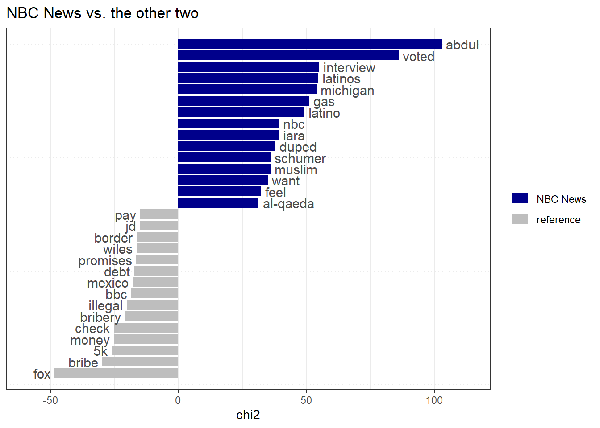
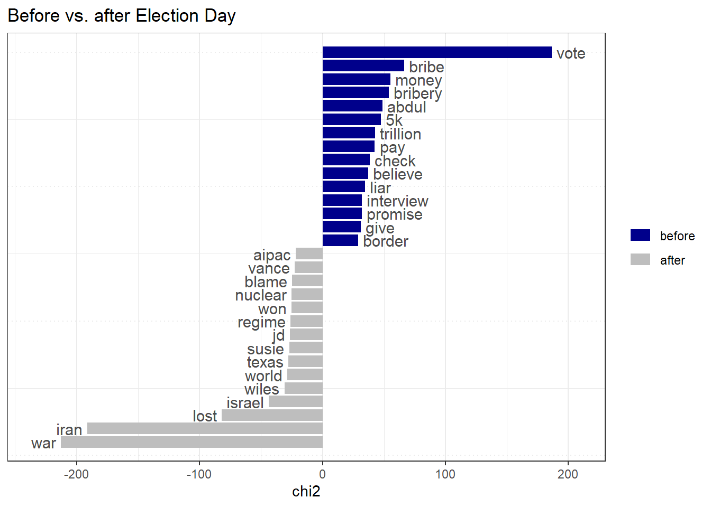
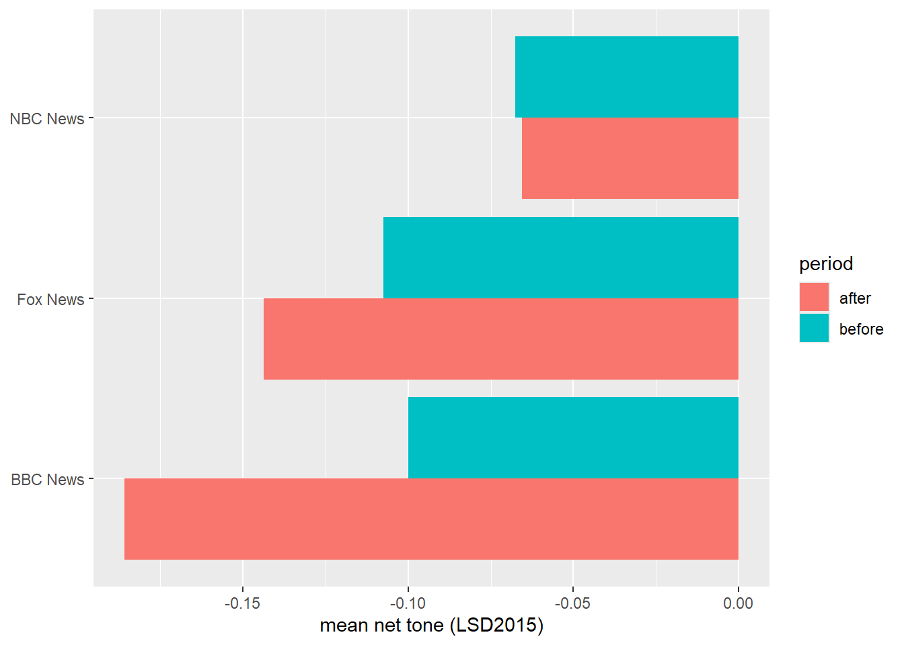

Assignment 7 — Social media data from the YouTube API
EPPS 6302 · 2026 US midterm elections on YouTube
Author
John Vasconcelos
Published
November 13, 2026
This page collects YouTube comments on the 2026 US midterm elections through the YouTube Data API v3 (with the R package tuber), before and after Election Day, and analyses them with quanteda. Collection chunks are shown but not re-run when the page is rendered (eval: false); the analysis reads the saved files, so rendering uses no API quota. Raw comments are kept on my computer only and are not published.
Code
library(tuber)library(dplyr)library(tidyr)library(stringr)library(purrr)library(lubridate)library(ggplot2)library(quanteda)library(quanteda.textstats)library(quanteda.textplots)stopifnot(nzchar(Sys.getenv("YOUTUBE_KEY"))) # key is set? (never print it)packageVersion("tuber"); packageVersion("httr2")
[1] '3.0.0'
[1] '1.3.0'
Code
dir.create(here::here("data-raw/youtube"), recursive =TRUE, showWarnings =FALSE) # ignorado pelo gitdir.create(here::here("logs"), showWarnings =FALSE) # publicado# check that data-raw/ and .Renviron are git-ignored:readLines(here::here(".gitignore")) |>str_subset("data-raw|Renviron")
[1] ".Renviron" "data-raw/"
Code
# tuber 3.0 returns "tuber_result" objects that print only metadata and hide the table.# plain() turns them into ordinary tibbles; total_of() reads the total the API reports.plain <-function(x) as_tibble(as.data.frame(x))total_of <-function(x) attr(x, "total_results") %||%NATERM <-"US midterm election"# the exact term sent to the APIPRE_START <-"2026-09-01T00:00:00Z"PRE_END <-"2026-10-27T23:59:59Z"POST_START <-"2026-11-04T00:00:00Z"# The three channels of part 2c (IDs checked with get_channel_details())channels <-tribble(~kind, ~channel_id,"national network", "UCeY0bbntWzzVIaj2z3QigXg", # NBC News"cable news", "UCXIJgqnII2ZOINSWNOGFThA", # Fox News (ou CNN: UCupvZG-5ko_eiXAupbDfxWw)"international", "UC16niRr50-MSBwiO3YDb3RA"# BBC News)
1. Quota plan
Planned before any call. Search has its own budget (100 calls/day); everything else draws on 10,000 units/day. A search.list page (50 results) costs 100 units.
yt_get_quota_usage() # run at the end of the collection
The plan above already includes the revised uploads step; my first plan allowed only 30 units for it (10 pages per channel). That was the main miss: because NBC and Fox each post over 50 videos a day, reaching 1 September took 194 units (34 for BBC, 79 for NBC, 81 for Fox), plus two earlier attempts with 500 and 4,000 uploads. Search used 8 of its 100 daily calls, as planned. tuber counts quota only within one R session (after a restart it showed 164 data units and 4 search calls), so it cannot replace the daily total in the Google Cloud Console; overall the collection stayed far below the 10,000-unit limit.
search_pre_rel <-readRDS(here::here("data-raw/youtube/search_pre_rel.rds"))search_pre_view <-readRDS(here::here("data-raw/youtube/search_pre_view.rds"))# ii. what YouTube says exists vs. what it gavetibble(list =c("relevance", "viewCount"),total_results =c(total_of(search_pre_rel), total_of(search_pre_view)),rows_returned =c(nrow(search_pre_rel), nrow(search_pre_view)),duplicates =c(sum(duplicated(search_pre_rel$video_id)),sum(duplicated(search_pre_view$video_id))))
# iii. one row per videorel <-distinct(plain(search_pre_rel), video_id, .keep_all =TRUE)view <-distinct(plain(search_pre_view), video_id, .keep_all =TRUE)# i. overlap and dominant channelslength(intersect(rel$video_id, view$video_id))
[1] 28
Code
count(rel, channel_title, sort =TRUE) |>head(10)
# A tibble: 10 × 2
channel_title n
<chr> <int>
1 CNN 11
2 Election Predictions Official 7
3 FRANCE 24 English 7
4 Let's Talk Elections 7
5 India Global Review 4
6 DW News 3
7 NBC News 3
8 TODAY 3
9 The United States Chronicles 3
10 EUREKA US 2
Code
count(view, channel_title, sort =TRUE) |>head(10)
# A tibble: 10 × 2
channel_title n
<chr> <int>
1 CNN 34
2 MS NOW 6
3 Al Jazeera English 4
4 NBC News 3
5 TLDR News Global 3
6 CBS News 2
7 CNN-News18 2
8 ITV News 2
9 LastWeekTonight 2
10 TODAY 2
The two orders give different pictures of the same topic. Sorted by views, the list is concentrated: CNN alone has 34 of the 94 unique videos, and the ten largest channels account for 60. Sorted by relevance, CNN still leads but with only 11 videos, followed by small channels that specialise in election forecasts. In both lists many channels are not American (France 24, DW, Al Jazeera, India Global Review, ITV), so an English-language search for a US election reaches a global audience. Fox News does not appear in either top ten, so what I can study through search depends on YouTube’s ranking, not on which outlets cover the election.
The API reported about 1,000,000 results for both orders. This is a rounded estimate, not a count, so the true size of the population is unknown. Each request returned exactly the 100 rows I asked for: what I can study is decided by YouTube’s ranking, not by what exists.
Within the same list, 2 videos (relevance) and 6 (viewCount) came back twice, because the ranking shifts between the 50-result pages. After keeping one row per video, I have 98 and 94 unique videos.
# (the `channels` table is defined in the setup chunk)channel_info <-plain(get_channel_details(channel_ids = channels$channel_id))saveRDS(channel_info, here::here("data-raw/youtube/channel_info.rds"))# uploads: newest first, 50 per page (1 unit per page).# 500 were not enough to reach 1 September (NBC and Fox post over 50 videos a day);# 4,000 per channel = up to 80 units each, about 240 in total.uploads <-map(channels$channel_id, \(id) list_channel_videos(id, max_results =4000)) |>set_names(channels$channel_id)saveRDS(uploads, here::here("data-raw/youtube/uploads.rds"))# Fox was then extended to 4,100 uploads, because 4,000 stopped at 07:15 UTC on 1 September:# uploads[["UCXIJgqnII2ZOINSWNOGFThA"]] <- list_channel_videos("UCXIJgqnII2ZOINSWNOGFThA", max_results = 4100)# saveRDS(uploads, here::here("data-raw/youtube/uploads.rds"))
Code
uploads <-readRDS(here::here("data-raw/youtube/uploads.rds"))# Pattern revised after reading 20 kept and 20 dropped titles (see iii): single words# ("senate", "governor", "vote") let in hearings, executions and "Fat Bear Week"; they now count# only as part of a race. "primary", "campaign", "candidate" and the party names were added.TITLE_PATTERN <-regex(paste("midterm", "election", "ballot", "campaign", "primar(y|ies)", "candidate","(house|senate|governor'?s?|gubernatorial) race", "\\bvoters?\\b", "early voting","\\bpolls?\\b", "\\bGOP\\b", "Democrat", "Republican", sep ="|"), ignore_case =TRUE)# STRICT filter, used only to choose the videos whose comments are collected (2d and 2e).# The broad filter above COUNTS election videos; for SAMPLING, party names pulled in# controversial non-election videos, and foreign elections entered through "election".SAMPLE_PATTERN <-regex(paste("midterm", "election", "ballot", "campaign", "primar(y|ies)", "candidate","(house|senate|governor'?s?|gubernatorial) race", "\\bvoters?\\b", "early voting","\\bpolls?\\b", sep ="|"), ignore_case =TRUE)NOT_US <-regex("Israel|Netanyahu|Brazil|Serbia|Japan|Canada|\\bUK\\b|Britain|Scotland", ignore_case =TRUE)US_ANCHOR <-regex("midterm|\\bUS\\b|U\\.S\\.|America|Trump|Democrat|Republican|GOP|MAGA|Senate|House|governor|Congress",ignore_case =TRUE)up <-imap_dfr(uploads, \(df, id) mutate(plain(df), channel_id = id, row =row_number())) |>mutate(pub =ymd_hms(coalesce(video_published_at, published_at)),keep =str_detect(title, TITLE_PATTERN))# ii. how many units to reach 1 Septemberup |>group_by(channel_id) |>summarise(n_uploads =n(), newest =max(pub), oldest =min(pub),per_day =round(n() /as.numeric(difftime(max(pub), min(pub), units ="days")), 1),reached_sep1 =any(pub <ymd("2026-09-01")),first_row_before_sep1 =if (reached_sep1) min(row[pub <ymd("2026-09-01")]) elseNA_integer_,units_needed =ceiling(first_row_before_sep1 /50))
election_vids_pre <- up |>filter(keep, pub >=ymd("2026-09-01"), pub <ymd("2026-10-28"))# i. did the channel route find videos that search missed?election_vids_pre |>group_by(channel_id) |>summarise(n =n(), not_in_search =sum(!video_id %in%c(rel$video_id, view$video_id)))
# iii. read 20 kept and 20 dropped titlesset.seed(6302)up |>filter(pub >=ymd("2026-09-01"), pub <ymd("2026-10-28")) |>group_by(keep) |>slice_sample(n =20) |>select(keep, title) |>print(n =40)
# A tibble: 40 × 2
# Groups: keep [2]
keep title
<lgl> <chr>
1 FALSE Robot kicks developer, knocking remote from his hand #shorts #breaking…
2 FALSE WATCH: Texas crowd cheers nervous boy on diving board #shorts #foxnews…
3 FALSE France's latest art heist: the hunt for two missing Renoir paintings |…
4 FALSE What Trump and Xi dined on at the White House state dinner | BBC News
5 FALSE MIT is building space stations like you would build with magnatiles
6 FALSE Trump defends Ramaswamy's ad featuring Amy Acton's mom
7 FALSE McEnany: This is CRAZY
8 FALSE Florida couple sues after IVF mix-up
9 FALSE Mamdani gives migrants tips to AVOID ICE in Spanish #shorts
10 FALSE Retired FDNY medical officer on impacts of 9/11-related illnesses
11 FALSE Colbert gets standing ovation accepting Emmy for 'Late Show'
12 FALSE Experts find deleted Snapchats after Wells went missing
13 FALSE Oregon man fires at police drone in SWAT standoff
14 FALSE 'GO GET A JOB': Vance delivers BLISTERING anti-fraud message
15 FALSE Cornell University police made drug arrest hours before alleged sexual…
16 FALSE Trump says he let Katie Zacharia decide to leave press sec role
17 FALSE Three dead, one hospitalized after LA news helicopter crash #shorts #u…
18 FALSE Full Episode: TODAY Show - Oct. 12
19 FALSE Bodycam shows moments after ICE shoots DoorDash driver
20 FALSE US central bank raises interest rates for first time in three years. #…
21 TRUE Survivors work to keep Epstein files in spotlight ahead of midterms
22 TRUE Clancy holdout juror says he was targeted for being Black Republican #…
23 TRUE Michigan US Senate race is ‘still competitive,’ Democratic congresswom…
24 TRUE Netanyahu loses majority in Israel - but no clear election winner. Wha…
25 TRUE Israelis ‘deciding on direction of country’ in pivotal election. #Isra…
26 TRUE Democrats are fundamentally 'AGAINST AMERICAN SOVEREIGNTY': Rep Brando…
27 TRUE 'NO BRAINER': Trump devises MAJOR midterm plan for stay-at-home parents
28 TRUE Byron Donalds: When you lead with common sense, your people thrive #sh…
29 TRUE Republican House candidate looking to flip Ohio seat says there’s an ‘…
30 TRUE Trump hits campaign trail with midterms CLOSING IN
31 TRUE LIVE: Trump campaigns in North Carolina ahead of the midterms | NBC Ne…
32 TRUE Wisconsin governor candidate survives plane crash
33 TRUE Russian operative likely behind fake videos targeting Texas Senate can…
34 TRUE WATCH: GOP senators step in as confusion erupts over McConnell vote
35 TRUE MASSIVE migrant caravan marches toward US border ahead of midterms
36 TRUE Kentucky Democrat says he'll 'repair the damage that Mitch McConnell h…
37 TRUE Laura Ingraham: The ONLY poll that matters is on Election Day #shorts …
38 TRUE Introducing: Here’s the Scoop Election Edition
39 TRUE GOP lawmaker: We have this habit of 'medicalizing evil' #shorts #fox #…
40 TRUE Justice Department sues California over alleged noncitizen voters
Yes, almost entirely. Through the uploads lists, the three channels posted 587 election-related videos between 1 September and 27 October (BBC 71, Fox 243, NBC 273), and only 7 of them (1, 1 and 5) had appeared in either search list. Fox, which was absent from the search results, turns out to be one of the heaviest publishers on the topic. The two routes produce almost disjoint samples: search shows what YouTube chooses to rank for a term, while the channel route shows what an outlet actually published.
The uploads list returns 50 videos per unit, newest first, so how far back I can go is set by how much each channel publishes. BBC News posts about 22 videos a day and reached 1 September after 34 units; NBC News (about 52 a day) needed 79 units, and Fox News (about 54 a day) needed 81, for 194 units in total against the 30 I had planned. My first attempt, 500 videos per channel (10 units), covered only the last few weeks for every channel, and even 4,000 videos stopped at 07:15 UTC on 1 September for Fox, so I extended Fox to 4,100. The budget for this step has to be planned from each channel’s posting rate, not from a fixed number of pages.
Reading 20 kept and 20 dropped titles shows the first pattern was both too broad and too narrow: single words such as “governor”, “vote” and “senate” let in an execution in Tennessee, a UK vote on assisted dying, a Senate hearing and “Fat Bear Week”, while a Democratic primary was dropped. The revised pattern ties those words to a race (“senate race”, “governor’s race”) and adds “primary”, “campaign”, “candidate” and the party names. In a new sample of 40 titles, the kept ones are mostly about the US campaign, but two kinds of error remain. Party names let in political stories that are not about the election, and foreign elections (Israel) still pass. In the other direction, titles that name only the candidates, such as Ramaswamy’s ad against Amy Acton in the Ohio governor’s race, are missed. A keyword filter on titles trades one error for the other; I kept the broader version and treat it as an upper bound.
2d. Comments, log and manifest
Code
# Collects up to max_per_video comments per video and logs the status of each videoif (!exists("collect_comments")) { collect_comments <-function(video_ids, max_per_video =300) { res <-map(video_ids, \(v) { out <-tryCatch(get_all_comments(v, max_results = max_per_video),error =function(e) e) status <-if (inherits(out, "error")) {if (str_detect(conditionMessage(out), "disabled")) "disabled"else"error" } elseif (nrow(out) ==0) "none"else"ok"list(data =if (status =="ok") plain(out) elseNULL,log =tibble(video_id = v, status = status,n_received =if (status =="ok") nrow(out) else0L,collected_at =Sys.time())) })list(comments =bind_rows(map(res, "data")), log =bind_rows(map(res, "log"))) }}write_manifest <-function(path, window, videos, n_comments) { m <-list(source ="YouTube Data API v3 via tuber",tuber_version =as.character(packageVersion("tuber")),search_term = TERM, # exact termorders =c("relevance", "viewCount"),window = window,channels = channels$channel_id,title_pattern =as.character(TITLE_PATTERN), # broad filter (counting, 2c)sample_pattern =as.character(SAMPLE_PATTERN), # strict filter (choice of videos)excluded =as.character(NOT_US),cap_per_video =300,videos = videos,n_comments = n_comments,collected_at =format(Sys.time(), tz ="UTC"),delete_by =as.character(Sys.Date() +30) # III.E.4.d: keep at most 30 days ) jsonlite::write_json(m, path, auto_unbox =TRUE, pretty =TRUE)# the key must NOT appear in the manifest:stopifnot(!any(str_detect(readLines(path), fixed(Sys.getenv("YOUTUBE_KEY")))))}
Code
# 3 videos per channel: the most-commented among those passing the STRICT filtervids_pre <- election_vids_pre |>filter(str_detect(title, SAMPLE_PATTERN), str_detect(title, US_ANCHOR), !str_detect(title, NOT_US)) |>left_join(plain(readRDS(here::here("data-raw/youtube/video_stats_pre.rds"))) |>bind_rows(plain(get_video_stats(election_vids_pre$video_id))) |>distinct(video_id, .keep_all =TRUE) |>mutate(comment_count =as.numeric(comment_count)), # as text, "99" would sort above "1500"by ="video_id") |>group_by(channel_id) |>slice_max(comment_count, n =3, with_ties =FALSE) |>ungroup()pre <-collect_comments(vids_pre$video_id, max_per_video =300)log_pre <- pre$log |>left_join(select(vids_pre, video_id, channel_id, title,reported = comment_count), by ="video_id")saveRDS(pre$comments, here::here("data-raw/youtube/comments_pre.rds"))saveRDS(vids_pre, here::here("data-raw/youtube/vids_pre.rds"))write.csv(log_pre, here::here("logs/collection_log_pre.csv"), row.names =FALSE) # published (no author data)write_manifest(here::here("logs/manifest_pre.json"), c(PRE_START, PRE_END), vids_pre$video_id, nrow(pre$comments))
2e. After Election Day
Same as 2b–2d with published_after = POST_START and published_before = NULL (until collection day).
# iv. authorship concentration and duplicates (counts only, no names)by_author <-count(comments, author_channel_id, sort =TRUE)top10 <-ceiling(0.10*nrow(by_author))sum(by_author$n[1:top10]) /nrow(comments) # share from the 10% most active authors
Received vs. reported. The 18 videos reported 45,092 comments; I received 5,393 (12%). The gap is mostly my own cap of 300 per video: Fox videos had 3,700–6,400 comments each, so I kept about 6% of Fox’s comments before the election and 5% after, against 25% and 51% for BBC. The cap makes every channel the same size in my data even though Fox’s audience comments about ten times more. Part of the gap also comes from comments that YouTube counts but does not return (held for review, removed as spam, deleted by authors); the API does not let me tell these apart from the cap.
Status. All 18 videos returned comments (“ok”). No video had comments disabled, but this is by design rather than a finding: I chose the most-commented videos, so a video with comments turned off could never be selected.
Replies and likes. 10.6% of the comments are replies; the rest are top-level. Attention is very unequal: the top 1% of comments receive 53% of all likes, about three in four comments received no like at all, so a handful of comments define what a viewer sees first.
Authors and duplicates. The 10% most active authors wrote 22% of the comments, and 46 comments are exact copies of another comment. A count of comments is therefore not a count of people: a small group of heavy commenters, and repeated text, weigh more than their number.
3b. Read, then count
Code
clean <- comments |>mutate(text = text_original |>str_remove_all("https?://\\S+") |># drop URLsstr_remove_all("@[\\w.-]+")) # drop @mentionscorp <-corpus(clean, docid_field ="comment_id", text_field ="text")docvars(corp) <-select(clean, channel_title, video_id, is_reply, like_count, date, period)summary(corp, n =5)
Corpus consisting of 5393 documents, showing 5 documents:
Text Types Tokens Sentences channel_title video_id
UgymNlFnvzZTmQtSo2l4AaABAg 12 13 1 BBC News HGRNZwbzktQ
Ugwgz_C32uHyyzY2ggJ4AaABAg 27 28 3 BBC News HGRNZwbzktQ
UgzdjbZf8IYiUmmwcxx4AaABAg 49 57 3 BBC News HGRNZwbzktQ
Ugyah2_NZCMB8kobnn94AaABAg 22 26 3 BBC News HGRNZwbzktQ
Ugz0954a6R65uZrRcS94AaABAg 9 9 1 BBC News HGRNZwbzktQ
is_reply like_count date period
FALSE 0 2026-10-24 before
FALSE 0 2026-10-06 before
FALSE 0 2026-09-29 before
FALSE 0 2026-09-26 before
FALSE 0 2026-09-25 before
Unit of analysis: each comment, top-level or reply, is one document. Likes, authors and timing belong to single comments, and a thread mixes several people, often arguing with each other, so a thread-level document would blur exactly the disagreement I want to see. URLs and @mentions are removed. Emoji are kept in the text, but they are dropped as symbols when tokenising and the sentiment dictionary ignores them; the validation below shows what that costs.
Keyword-in-context with 20 matches.
[Ugwap2DirimCzWkrxax4AaABAg, 9]
[UgxNdCjn-cidTzKnabp4AaABAg, 31]
[Ugxsr5SR1PxOTyTdJ4Z4AaABAg, 1]
[UgxIWTKxYiTB5SJ49bB4AaABAg, 2]
[UgwAHY10pQyXsCjv0w54AaABAg, 105]
[UgzyEnR6zIHTgocoY2t4AaABAg, 77]
[UgzbuAuoCVGVYSse9z54AaABAg.Acps01_yIWSAcpv_N4O9Li, 129]
[UgzXuy8urbCnMAz5Atx4AaABAg, 11]
[UgyBGx9OLzc5z3vvU5x4AaABAg, 24]
[UgyfAtJF5mt50A2dVul4AaABAg, 12]
[UgzZjZXsROoTW6LT1N94AaABAg, 7]
[Ugzd_ggxyrR8Omz_hGR4AaABAg, 7]
[UgzY8tqmz5As1yAzcDN4AaABAg, 18]
[Ugy11UR7mKDOyo8nEgp4AaABAg, 21]
[UgzlQouPvz0CTgY0ehh4AaABAg, 42]
[UgwDb80DyaLCAf8o2hl4AaABAg, 17]
[Ugz8pGt2Gmpebl6umFh4AaABAg, 8]
[UgwmXK2P6Cmq5n3MovB4AaABAg, 65]
[Ugw93aUoG43kQYDepPh4AaABAg, 1]
[UgwpMhXOxPd-fs_ah894AaABAg, 11]
are asking yourselves what will the | democrats |
could blame the bad parts on | democrats |
| democrats |
the | democrats |
approval comes from his not being | democrat |
the mid-terms clinched victory for the | democrats |
have consistently performed much better under | democratic |
afford a home now wait until | democratic |
the rising cost of everyday things | democrats |
to be found and held accountable | democrats |
hey bertt it’s democratic governor not | democrat |
republican voters better vote for the | democrats |
to anyone who wants to vote | democrat |
is crazy both parties republican and | democratic |
that voted for trump not communist | democrats |
union member and continued to back | democrats |
this up front or i vote | democrat |
or tranport system dismantling the us | democratic |
| democrats |
but we cant loose that seat | democrats |
do if they win you should
will continue to wreck because you
gave me eggs so stop lying
and not from any actual understanding
but still appear to be quite
leadership that respects legal guardrails and
socialist policies kick in game over
vs republicans voters don’t seem to
are communist pigs and they won't
governor
the only one winning is trump
or republican they aren’t satisfied with
are evil just as much as
who don’t love jesus amen hallelujah
because dems backed unions but eventually
ps you owe me from doge
institution harrasing journalists intimidating nations with
are trying their best to lose
are hell bent on americas destruction
Keyword-in-context with 20 matches.
[UgxuFqSxQJpuSyHmdUt4AaABAg.Acn26O1WYPuAcnEyisR3Hm, 1]
[UgywI5fZC-3YJDs6syp4AaABAg, 12]
[UgyCq9TM7qBjMlDgR3x4AaABAg, 44]
[UgwJy6J4q-dGx7va4wB4AaABAg, 100]
[UgykkiiLz8IDNAIEEZ54AaABAg, 36]
[UgySsBXlGmnHW8uEuNN4AaABAg, 12]
[UgwhWCAR5hZ3Cs38LJh4AaABAg, 28]
[UgwWcjB7JwC1VQQZ0JN4AaABAg, 5]
[UgzFDrV1udqBUxj4fMh4AaABAg, 16]
[UgyxaYnV67ev3PGi5YR4AaABAg, 2]
[UgxeGXrTJxwlcPj4_-14AaABAg, 44]
[UgzMxft-Q5lL0d5bXcB4AaABAg, 13]
[UgxSWCCT-ViCvPYb1dd4AaABAg, 6]
[UgyG6v4V3JFUjd_XNLV4AaABAg, 4]
[UgzUyiW2uPZ5hTPA_bB4AaABAg, 41]
[UgyxaYnV67ev3PGi5YR4AaABAg, 41]
[UgwIQ5_lsWyv82bBlzF4AaABAg, 13]
[Ugyw5uexsiQ4OAnWZ8d4AaABAg, 17]
[Ugzx2x--SbjEZu7fcjx4AaABAg, 5]
[Ugx-MChNEaG1PZxbioZ4AaABAg, 2]
| republicans |
on sounds like such a hack | republicans |
every show all day every day | republicans |
win the midterm elections if the | republicans |
having to fight in court the | republican |
let’s see how many decades the | republican |
by republicans and those who lean | republican |
i'm from wyoming voting | republican |
hindered by mitch the turtle and | republicans |
texas | republicans |
a criminal and i'm a registered | republican |
what a waste of time for | republicans |
with jim jordan as the | republican |
it is the | republican |
and in the future best thing | republicans |
may be able to convict him | republicans |
suffering from donald trump and maga | republicans |
his ability and willingness to primary | republican |
after every election the | republicans |
aipac-backed | republicans |
didn't lose because they were off
will go insane
win you win with us and
party will have several years to
party gets locked out of government
independents soured on trump and republican
god bless the president
opposed him in everything he tried
showed obvious corruption especially with the
disgusting and pathetic
ending being losers
leader in the house republicans will
senators and representatives that keep trump
can do is break from trump
will start scrambling vote independent please
in the past years we finally
members of congress who disagree with
say two things they didn't go
lost aipac through its political action
Keyword-in-context with 20 matches.
[Ugz36WgKvq2ZRlwUSE54AaABAg, 15]
[UgzuODK4p9S2DZVVIod4AaABAg, 112]
[UgwEces1tcSlTsRLTlF4AaABAg, 2]
[UgypenQnFIoBa-C7MR94AaABAg, 70]
[UgySisJysXIKD-UdqUZ4AaABAg, 1]
[UgzBMf9rNPv-MOnXkhR4AaABAg, 3]
[UgyyJ-b80KzpebI_itp4AaABAg, 1]
[UgzlQouPvz0CTgY0ehh4AaABAg, 51]
[Ugwon97SZykfnbtLpjB4AaABAg, 16]
[UgxIiXeo2IVw9SCHcQp4AaABAg, 25]
[Ugx4wW19T2E0jrg6oDt4AaABAg, 14]
[UgzsfunBNUgtmDhPr1V4AaABAg, 17]
[UgzLKRoiNXCbi8oO6Xt4AaABAg, 59]
[UgwIov8PGXLjIJGFZcV4AaABAg, 34]
[UgwqB48azfGQB1NT6D94AaABAg, 2]
[UgyCpsHjQEijyt3UTJp4AaABAg.AcoCZ3CFxINAcoSQQKWAj3, 21]
[UgwmSdnfqKYme5noLut4AaABAg, 99]
[Ugz4gw8V3ZhM-3ff0RV4AaABAg.Aa_xsZaYt5OAahM6CKkSAN, 30]
[Ugx_APLYptezJbkbE7V4AaABAg.AcqxYrpwtk5Acr20Qk1mzn, 21]
[UgwmxvAvS46MKDznRVN4AaABAg, 7]
united states of america donald duck | trump |
media losing viewers on video delusional | trump |
president | trump |
supposed reality i don't understand how | trump |
| trump |
donald duck | trump |
| trump |
love jesus amen hallelujah maga in | trump |
matter for debate after the way | trump |
over of the country and donald | trump |
the crazy and corrupt stuff that | trump |
they gerrymandered to steal seats for | trump |
can elect an other one a | trump |
republican legal costs will be billions | trump |
when | trump |
decided not to vote do care | trump |
a very poor judgment by jd | trump |
due to the covid relief checks | trump |
the wh got killed thanks to | trump |
americans are so tiresome after everything | trump |
when he finished his term in
blames election losses on on video
knows they cheated wait and see
still has a stranglehold over the
will continue to give putin and
must resign it was always a
hat einen hervorragenden fbi direktor entlassen.trump
name we pray
behaves in the name of america
stands up in front of people
has done the second he got
and it failed spectacularly
smarter more disciplined more dangerous and
his criminal supporters must be held
is running trump always does better
was rekd because he lied about
brought jd on the world stage
sent the government is in debt
and netanyahu fact all fact
has done how does he still
Keyword-in-context with 20 matches.
[UgzlaAeFOFAX9oPFd9B4AaABAg, 10]
[UgynJS6Upvs9RfHeKJF4AaABAg, 20]
[Ugw6ZQamJCQsRVr56pR4AaABAg, 48]
[UgwRs2GUGh9elsQ2dod4AaABAg, 203]
[UgwJDIzqyeRTR5J7wwZ4AaABAg.Aa_2uRAeCfzAa_BAA5RUsf, 5]
[UgxsnrqS5y0wn-0dE8Z4AaABAg, 4]
[UgxDqD71WVBRd48aEAx4AaABAg, 19]
[UgwcK17M7Bk-qIIHH6x4AaABAg, 4]
[UgyHr5s9FVuf_GSzvId4AaABAg, 21]
[Ugy1HEn0yekWunkXl9V4AaABAg, 24]
[UgwEyY1QN0JtcXoQEL14AaABAg, 3]
[Ugx8Zkd5NU3DTHaHoiB4AaABAg, 64]
[UgxIr5rMKmGnEwBHE854AaABAg, 14]
[UgzrZ7KuO5XILY_xk5t4AaABAg, 8]
[UgyiIE-jgspxgXnZBc14AaABAg, 8]
[UgzhWdeBHdciWf04ox14AaABAg, 13]
[Ugz538EujAUupcdMt_x4AaABAg, 11]
[UgwAwJKBpKUVULGHoeV4AaABAg, 15]
[Ugz4gw8V3ZhM-3ff0RV4AaABAg.Aa_xsZaYt5OAaa0QVZ2YT7, 24]
[UgzhWdeBHdciWf04ox14AaABAg, 8]
a lot was what made latino | voters |
who didn't vote for him because | votes |
the final word win or loss | vote |
immediately feasible when leveraged to drive | voter |
thankfully for trump his | voters |
trump selling for | votes |
were begging to be done they | voted |
vote early and | vote |
gop why bribe people for their | votes |
actually got off their rear-ends and | voted |
you said | vote |
on nov vote vote vote vote | vote |
side he just doesn't have to | vote |
as a conservative i will not | vote |
all the people who say their | vote |
paid votes who u think people | vote |
about that insignificant country iran i | voted |
the last year he gets my | vote |
either to vote or withhold his | vote |
democrates pay votes welfare is paid | votes |
think trump is telling the truth
are private so how could those
blue and be through with this
turnout for an election on the
are like goldfish he also said
pig
as if he was on the
often
only idiots believe this
they just assume victory without effort
like you were on the ballot
vote vote vote vote
for republicans
red or blue anyone who takes
don’t matter as one person this
when they r supported with ebt
agai inst the economy which is
all day every day
or to vote for or against
who u think people vote when
Keyword-in-context with 20 matches.
[Ugz7UF1cTJIVzSspysd4AaABAg, 8]
[Ugx7xqp16q_tbTt8YAt4AaABAg, 9]
[UgyQsCSw9mul3xYn_XJ4AaABAg, 9]
[Ugz6CTjFd8obcRCyxO14AaABAg, 9]
[Ugw-68Y0axw9sJc7Djx4AaABAg, 6]
[UgyI8SZ-ZhIWlrX9W6h4AaABAg, 21]
[UgyIcOPLUoAQfm7KTnN4AaABAg, 8]
[UgwfG0rWHSSnQ3egtJR4AaABAg, 5]
[Ugw6ZQamJCQsRVr56pR4AaABAg, 19]
[UgzYuVSvOt1kq27W0G94AaABAg, 11]
[UgxwgSoEXf80xegqbOV4AaABAg, 23]
[Ugx6pXRAqMNU1Ow6p3h4AaABAg, 8]
[Ugxf0lQonKgQbI9FeOh4AaABAg, 12]
[UgyMkg-ENsTFksZiyfB4AaABAg, 6]
[UgyjtRX7eJXosWtM-a94AaABAg, 7]
[UgwYyNjGjHQR-Ue-8iV4AaABAg, 5]
[Ugw3IM96S_r6C3M8SzV4AaABAg, 21]
[UgzIoTj_-3PKpdNeqDx4AaABAg, 4]
[Ugyh_UkktMnZveuGY-F4AaABAg, 6]
[UgzTJknNTCf-yrFNiDB4AaABAg, 11]
it was election fraud overseas absentee | ballot |
as if trump was on the | ballot |
for saying pretend i'm on the | ballot |
vote like he was on the | ballot |
trump is clearly on the | ballot |
writing johnny depp in on the | ballot |
voted like he was on the | ballot |
he wasn't on the | ballot |
when trump’s criminal crew confiscate the | ballot |
not in especially when the paper | ballots |
vote like he is on the | ballot |
as if i was on the | ballot |
show democrats leading the generic congressional | ballot |
if i were on the | ballot |
let’s pretend trump was on the | ballot |
he was on a | ballot |
to vote like he’s in the | ballot |
double check your | ballots |
if i was in the | ballot |
imagine his name was on the | ballot |
fraud investigate dearborn
thats why maga lost
we are still winning so much
trump didn't listen to us i
in trump's mind he's constantly talking
jack sparrow has my vote
if he was it would have
boxes of americans are fed up
are being found all over the
and they did
the idiot cant grasp the notion
by roughly points nationally realclearpolling average
we probably would have won only
yeee he lost he should resign
before submitting them early voters in
we would have won 🤦🏻♂️
they did
My reading of the 20 random lines per word (main focus of each line):
Word
Party
Candidate
Process
Grievance
democrat*
7
0
4
9
republican*
6
4
7
3
trump
–
20
3
~12
vote*
1
2
11
6
ballot*
0
13
4
3
Reading 20 random lines per word changes what the counts mean. “Democrat” is used more as an insult (“communist”, “evil”) than to name the party, while “republican” appears mostly in comments about the process: the loss, primaries, what the party should do next. Thirteen of the 20 “ballot” lines repeat the campaign line “vote as if Trump was on the ballot”, mostly with irony after the defeat, so a count of “ballot” would mostly measure a meme, not talk about voting. “Vote” carries a vote-buying theme (“paid votes”, “bribe people for their votes”) that comes from the four videos on the $5,000 pledge. Every “trump” line names the candidate, but most of them are attacks. I added “on the ballot” and “donald duck” as compounds because both appear repeatedly as fixed phrases.
Code
phrases <-phrase(c("house majority", "senate race", "early voting", "mail in","election fraud","on the ballot", "donald duck")) # my two, from reading the kwic linestoks_c <- toks |>tokens_compound(phrases) |>tokens_remove(stopwords("en"))dfm_c <-dfm(toks_c)topfeatures(dfm_c, 30)
trump people vote war just us
1197 691 522 456 430 428
like america now can iran get
372 350 337 325 320 313
republicans democrats american going one money
302 283 269 259 258 254
president americans want country go even
248 233 230 218 216 216
right time still never maga world
212 210 204 194 191 191
Code
dfm_ch <-dfm_group(dfm_c, groups = channel_title) # group oncekey_plots <-map(docnames(dfm_ch), \(target) { # one plot per channeltextstat_keyness(dfm_ch, target = target) |>textplot_keyness(n =15) +ggtitle(paste(target, "vs. the other two"))})key_plots
[[1]]

[[2]]

[[3]]

Code
dfm_c |>dfm_group(groups = period) |>textstat_keyness(target ="before") |>textplot_keyness(n =15) +ggtitle("Before vs. after Election Day")

Most of what is distinctive comes from the videos I chose rather than from the election or from the audience. Each channel is represented by three videos, and the top keywords map onto their topics: “border” and “mexico” (Fox’s migrant caravan video), “wiles”, “susie” and “resign” (Fox’s panel on Susie Wiles), “abdul” and “latinos” (NBC’s El-Sayed interview and its story on Latino voters). The audience shows through on top of that: BBC commenters frame the result through the world, the war, Russia and the UK, Fox commenters taunt (“cope”) and talk about the network itself, and the outlets’ names are among the most distinctive words for each channel. Over time the change is sharp: before Election Day the comments are about the $5,000 pledge (“bribe”, “bribery”, “money”, “5k”, “liar”); afterwards they are about blame for the loss and the war with Iran (“war”, “iran”, “lost”, “israel”, “blame”). With three videos per channel, a keyness comparison between channels is really a comparison between nine videos.
Code
sent <-tokens(corp, remove_punct =TRUE) |>tokens_tolower() |>tokens_lookup(data_dictionary_LSD2015[1:2]) |>dfm() # equivalent to dfm_lookup()sent_df <-convert(sent, "data.frame") |>bind_cols(docvars(corp)) |>mutate(net = (positive - negative) /pmax(positive + negative, 1),label =case_when(positive > negative ~"positive", negative > positive ~"negative",TRUE~"neither"))sent_df |>group_by(channel_title, period) |>summarise(mean_net =mean(net), n =n(), .groups ="drop") |>ggplot(aes(channel_title, mean_net, fill = period)) +geom_col(position ="dodge") +coord_flip() +labs(y ="mean net tone (LSD2015)", x =NULL)

According to LSD2015, comments are negative on average in every channel and period (between −0.07 and −0.19). Tone becomes more negative after Election Day for BBC (about −0.10 to −0.19) and Fox (−0.11 to −0.14), and stays flat for NBC. This should not be read as audiences becoming angrier: the dictionary scores words, and after the election the comments shift to the war with Iran, so negative words like “war”, “regime” and “nuclear” enter whether or not the commenter is upset about the result. The validation below tests how far the dictionary’s labels match a human reading.
Validation: 40 hand-coded comments
Code
set.seed(6302)val <- sent_df |>slice_sample(n =40) |>select(doc_id, label) |>left_join(select(clean, doc_id = comment_id, text), by ="doc_id") |>mutate(hand =NA_character_)write.csv(val, here::here("data-raw/youtube/validation_to_code.csv"), row.names =FALSE)# coded by hand in a spreadsheet (column "hand": positive / negative / neither) and saved as validation_coded.csv
Code
val <-read.csv(here::here("data-raw/youtube/validation_coded.csv"))mean(val$hand == val$label) # agreement
The dictionary agreed with my reading in 33 of 40 comments (82.5%). Its errors run in one direction: it misses negativity that is not carried by negative words. “He is faithful to no one” is scored positive because “faithful” is a positive word and the negation is lost; “this changes absolutely nothing” and a sarcastic “lunatics believe him 😂”, where “happy” cancels “lunatics”, come out neutral. Praise without emotional vocabulary (“a man of his word”) is also missed, and emoji, which carry much of the sarcasm, are ignored. The dictionary is reasonable for plain statements but undercounts sarcasm and implicit criticism, so the net tone above, already negative, is probably understated rather than exaggerated.
Report
What I collected and how. I studied how the 2026 US midterm elections were discussed in YouTube comments, using the YouTube Data API v3 through tuber with an API key, so only public data. I first searched for “US midterm election” in the two months before the vote (1 September–27 October), sorting once by relevance and once by view count. I then took a second route: the full list of uploads of three outlets, NBC News (national network), Fox News (cable) and BBC News (international), filtered by title. From each outlet I chose the three most-commented videos about the US campaign and downloaded up to 300 comments per video, and I repeated the same steps for 4–13 November, after Election Day. The result is 5,393 comments from 18 videos, kept on my computer for at most 30 days; only the logs, manifests and aggregate results are published.
What the collection looks like. The two routes see different things. Search returned 100 videos per order out of “about 1,000,000”, shared only 28 videos between its two orders, and was dominated by CNN when sorted by views. Through the uploads lists, the three outlets posted 587 election videos in the same window, and only 7 of them had appeared in search; Fox, absent from the search results, was one of the heaviest publishers. Reaching back to 1 September cost 194 units, six times my plan, because NBC and Fox post more than 50 videos a day. Building the title filter took three rounds: single words let in a Tennessee execution and “Fat Bear Week”, party names let in non-election controversies, and foreign elections (Israel, Germany) kept slipping in until I required a US anchor in the title.
The comments are not a sample of a conversation but a slice of it. The 18 videos reported 45,092 comments; I kept 12%. My cap of 300 per video means I hold about 5% of the Fox comments and half of the BBC comments, and it makes the three outlets the same size in my data although Fox’s audience comments about ten times more. Attention and voice are concentrated: the top 1% of comments receive 53% of the likes, three in four have none, the 10% most active authors wrote 22% of the comments, and 46 comments are exact duplicates.
What the text says. Reading before counting mattered. “Democrat” is used mostly as an insult, “republican” mostly in talk about the loss and the party’s next steps, and 13 of 20 “ballot” lines repeat the slogan “vote as if Trump was on the ballot”, usually ironically. Before Election Day the distinctive words are about the $5,000 pledge (“bribe”, “money”, “5k”, “liar”); afterwards they are about blame and the war with Iran (“war”, “iran”, “lost”, “blame”). The words that set each outlet apart mostly come from the topics of its three videos (the migrant caravan and Susie Wiles on Fox, Abdul El-Sayed and Latino voters on NBC), with an international frame on BBC (“world”, “uk”, “russia”). By the LSD2015 dictionary, tone is negative everywhere and more negative after the election on BBC and Fox. The dictionary agreed with my own reading of 40 comments 33 times (82.5%), but its errors all go one way: it misses sarcasm and criticism without negative words, and it ignores emoji.
The data-generating process. These numbers describe the comments YouTube showed me under my choices, not voters. First, the people: commenters choose to comment, a few comment a lot, and the audiences of BBC, Fox and NBC differ. Second, the platform: search ranking decided what search could find, YouTube’s moderation removes or holds some comments that are still counted, and the order in which the API returns comments decided which 300 I kept. Third, my own choices: picking the most-commented videos pulled the sample toward the most controversial story of the week (four of nine pre-election videos are about the $5,000 pledge), the cap equalised outlets of very different size, and with only three videos per outlet, comparing outlets is really comparing nine videos. Timing matters too: I collected the “before” comments after the election, so they include anything added, edited or deleted since. The safe claim is about what a reader of these videos would have seen in their comment sections, not about what Americans thought of the election.
Data note
Source: YouTube Data API v3 via the R package tuber 3.0.0, public (non-authorized) data with an API key stored in .Renviron, never in this page.
Terms: YouTube API Services Terms of Service and Developer Policies; no scraping (III.E.6); comments kept at most 30 days (III.E.4.d), with the deletion date (delete_by, 13 December 2026) written in each manifest; raw data in data-raw/, which is excluded from git.
Method: search term “US midterm election”; windows 1 September–27 October 2026 and 4–13 November 2026; search orders relevance and viewCount (100 results each); uploads lists of NBC News, Fox News and BBC News (4,000–4,100 videos per channel before, 700 after); broad title filter to count election videos, strict filter with a US anchor to choose the comment videos; the 3 most-commented videos per channel and period; at most 300 comments per video; collected on 13 November 2026.
What was collected: 18 videos, 5,393 comments (10.6% replies). Collection logs and manifests: logs/collection_log_pre.csv, logs/collection_log_post.csv, logs/manifest_pre.json, logs/manifest_post.json.
Selection: search ranking; my choice of three outlets; the title filters; selecting the most-commented videos, which favours controversial topics and excludes videos with comments disabled.
Known gaps: 88% of the reported comments were not collected (mainly the 300 cap, plus comments held for review, removed or deleted); the order of returned comments decides which ones were kept; the “before” comments were collected after Election Day; titles cannot always tell a US story from a foreign one; the sentiment dictionary misses sarcasm and emoji (82.5% agreement on 40 hand-coded comments).